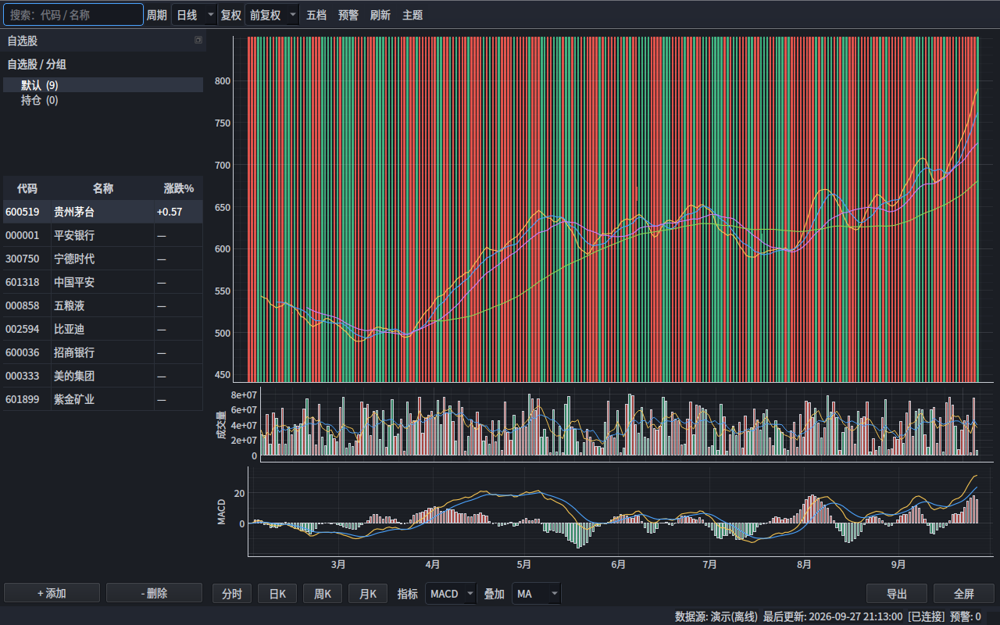
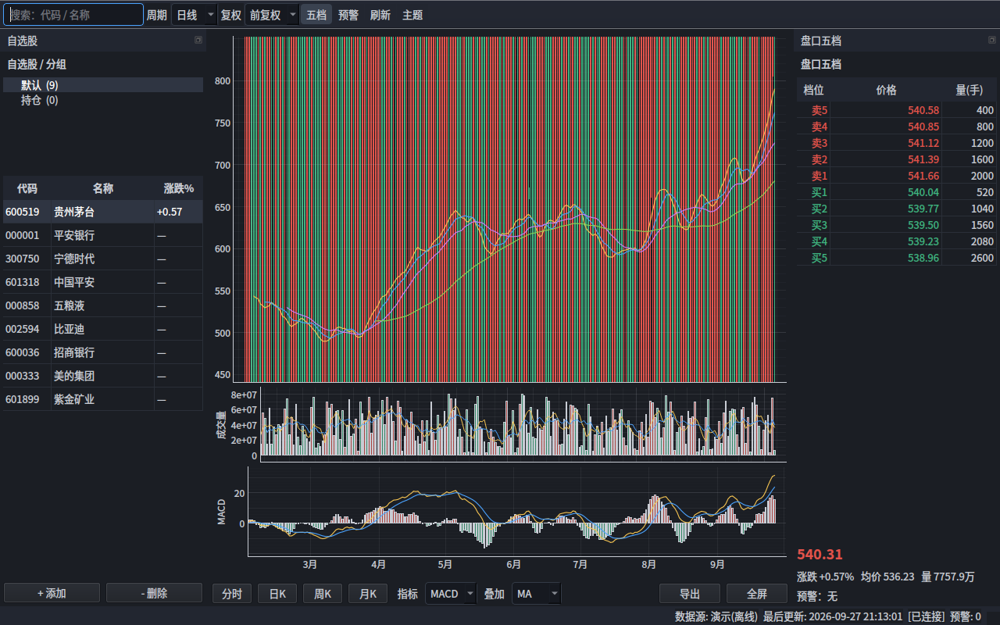

自选股行情分析客户端
桌面原生 PySide6 / Qt · 东方财富数据源 · 完全离线演示模式
界面预览
对应设计文档布局 A（盘口收起）与布局 B（盘口五档展开）。


功能
行情与图表
自绘蜡烛图 + MA/BOLL，成交量副图，MACD / KDJ / RSI 指标副图，分时走势线 + 均价线。
盘口与预警
五档盘口；四类预警规则（价格上穿/下破、涨幅/跌幅超过），边沿触发 + 托盘通知。
数据与线程
东方财富接口，接口/字段全部外置配置；QThreadPool 异步轮询，UI 不阻塞。
缓存
K 线 SQLite 缓存（缺 _sqlite3 时自动降级内存）+ 快照 LRU。
离线演示
--demo 使用确定性样例数据，无需网络即可运行与测试。
可打包
PyInstaller 单文件、无控制台窗口构建；GitHub Actions 跑单元 + 冒烟测试。
快速开始
git clone https://github.com/ltbkq/stock-client
cd stock-client
python3 -m venv .venv && .venv/bin/pip install -r requirements.txt
.venv/bin/python run.py --demo # 离线演示（无需网络）
.venv/bin/python run.py # 实时行情（东方财富）
.venv/bin/python run.py --no-proxy # 实时，忽略系统代理数据源配置（改接口不改代码）
接口地址、参数、字段映射、周期复权码表、限频都在 stockclient/data_sources.json；
用户可在 ~/.config/stock-client/data_sources.json 覆盖，与默认逐字段深合并。
.venv/bin/python -c "from stockclient.datasource import export_user_config as e; print(e())"
# 编辑 ~/.config/stock-client/data_sources.json 后重启即生效与设计文档的对应
| 设计文档 | 实现 |
|---|---|
| 布局 A / B | QDockWidget + 工具栏 [五档] 切换 |
| 9 个界面区域 | stockclient/ui/（工具栏/自选股/主图/量/指标/盘口/底部/状态栏） |
| 东方财富接入 | eastmoney.py + data_sources.json |
| 预警提醒 | alerts.py + ui/alerts_dialog.py |